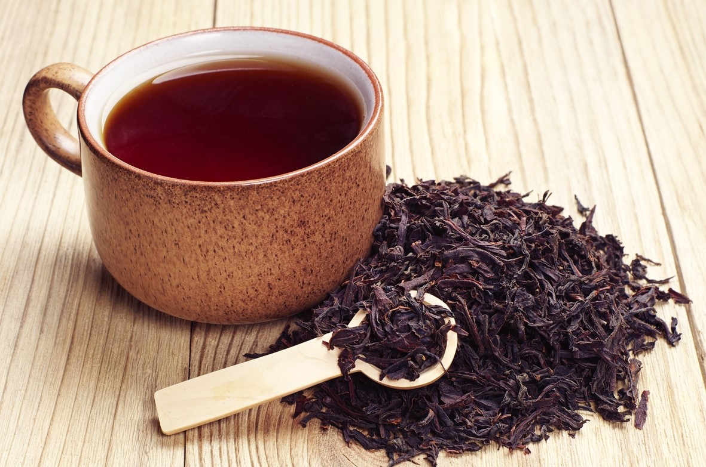
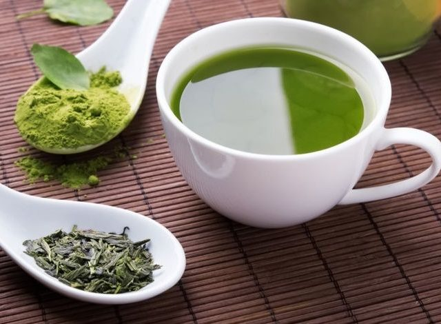
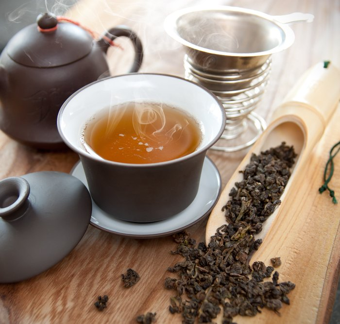
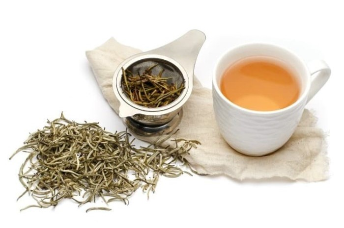

Black Tea

Teh hitam atau black tea adalah jenis teh yang mungkin paling sering
kamu temui. Teh hitam juga teh yang paling banyak di produksi dan di
ekspor di Indonesia, bahkan negara pengekspor teh hitam terbesar
ke-5 di dunia. Teh hitam diolah melalui proses fermentasi enzimatis
yang mana tidak menggunakan mikroba dalam proses fermentasinya.
Fermentasi yang terjadi menggunakan enzim fenolase yang telah
terkandung dalam teh dan mengoksidasi katekin menjadi senyawa
antioksidan teaflavin dan tearubigin. Fermentasi pada teh hitam
dikaregorikan sebagai fermentasi penuh karena prosesnya yang lebih
lama dan kompleks daripada jenis teh yang lain. Proses yang
dilakukan pertama kali adalah pelayuan selama 14-24 jam pada suhu
ruang yang kemudian daun digulung dan dipelintir untuk melepaskan
enzim alaminya. Setelah proses penggulungan, daun disimpan pada
tempat yang dingin dan lembab untuk dilakukan fermentasi dan
oksidasi dengan bantuan oksigen dan enzim selama 1 hingga 2 hari.
Proses fermentasi ini sangat menentukan kualitas warna dan rasa teh
hitam. Lalu teh yang telah difermentasi dikeringkan melalui proses
pengovenan atau penjemuran untuk menghentikan proses oksidasinya
untuk kemudian dikemas. Teh hitam yang dihasilkan biasanya berdaun
hitam dengan aroma khas teh yang kuat, dan setelah diseduh akan
berwarna merah hingga merah kehitaman dengan rasa teh yang cenderung
asam atau pahit beraroma khas teh.

Teh hijau diproses tanpa melalui proses fermentasi dengan cara
menginaktifkan enzim folase yang ada pada pucuk daun teh segar
setelah proses pemanenan dengan cara pemanasan saat baru dipetik.
Pemanasan biasanya dilakukan dengan cara udara kering (disangrai
atau dioven) dan pemanasan menggunakan uap panas. Proses pemanasan
daun teh ini akan memberikan aroma dan rasa teh yang berbeda-beda.
Pemanasan daun teh dengan uap panas akan memberikan warna teh dan
seduhannya yang lebih hijau terang dengan rasa yang dan aroma yang
ringan, sedangkan pada proses pemanasan metode oven atau sangrai
akan memberikan warna dan seduhan cenderung lebih gelap dan memiliki
rasa dan aroma smoky serta creamy.

Proses pembuatan teh oolong dikategorikan secara semi fermetasi,
karena teh ini melewati proses fermentasi tetapi dihentikan sesegera
mungkin melalui pemanasan setelah proses penggulungan daun. Selain
itu teh oolong juga menggunakan jenis teh dengan varietas berbeda
dibanding teh lainnya yaitu jenis Camellia sinensis varietas
Sinensis yang memiliki rasa dan aroma lebih ringan. Jenis teh yang
berasal dari cina ini mungkin belum sepopuler jenis teh lainnya
karena masih jarang diproduksi di Indonesia. Pada proses pengolahan,
teh oolong pertama-tama dilakukan dengan melayukan daun dibawah
sinar matahari selama kurang lebih 1 hari, kemudian daun dilakukan
proses penggulungan agar terjadi proses fermentasi enzimatis.
Setelah daun terpapar udara, warna daun akan berubah menjadi lebih
gelap dan proses fermentasi telah terjadi. Daun teh yang telah
berwarna gelap tadi lalu segera dipanaskan untuk menghentikan proses
fermentasinya dan dikeringkan. Daun teh oolong pada umumnya berwarna
hitam dengan bentuk bulat menggumpal serta memiliki rasa dan aroma
lebih ringan dibanding teh hitam tetapi lebih pekat daripada teh
hijau, dengan rasa dan aroma yang khas dan ringan teh oolong.

Teh putih adalah salah satu jenis teh premium di Indonesia. Jenis
teh ini tidak mengalami proses fermentasi sama sekali, yang mana
setelah proses pemanenan langsung dilakukan pemanasan sesegera
mungkin melalui metode penguapan atau oleh udara. Nama teh ini
dipetik dari kuncup-kuncup daun muda yang masih ditutupi oleh
rambut-rambut putih halus. Daun teh jenis ini memiliki kandungan
senyawa antioksidan katekin yang lebih tinggi dibanding jenis teh
lainnya karena proses pengolahannnya yang singkat sehingga khasiat
dari teh putih juga lebih baik dibanding jenis teh lainnya. Jenis
teh putih telah diproduksi di beberapa perkebunan di Indonesia
seperti Perkebunan Teh Ciwidey, Perkebunan Teh PTPN VIII di Garut,
dan Perkebunan PTPN XII di Wonosari, Jawa Timur. Daun teh putih
berwarna putih kecoklatan dengan aroma teh yang khas, dan ketika
diseduh rasa dan aroma dari teh putih sangatlah ringan serta
berwarna bening sedikit keruh.